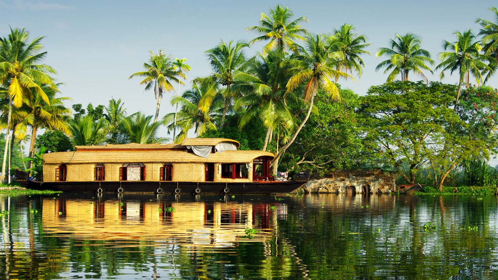

1.Alleppey (Alappuzha):

There is the whole of Kerala in one side, and then there is this heavenly tourist destination called Alappuzha or Alleppey! Esteemed as the ‘Backwater Capital of India’ or the ‘Venice of the East’, Alleppey is known for its silent backwaters and bountiful beauty!
Seated on the banks of the azure Vembanad Lake, it is in fact one of the most popular backwater destinations in Kerala and one of the highest sought-aftertourist places in Kerala. Visit this paradise; enjoy houseboat cruise and stay, village walks, Ayurvedic therapies and lot more!
2.Wayanad:

Cradled in the lap of the Western Ghats, Wayanad truly deserves a top rank in the list of places to visit in Kerala. Situated at an astounding height of 700-2,100m, this stunning hill station is all about fantasy, untouched nature, unforgettable moments, and merriment!
Adding more to Wayanad’s enchanting beauty, visitors can also revisit and unfold history while visiting this hilly retreat. Yes, the lush and pristine forests in Wayanad are said to be inhabited more than 3,000 years ago.
3.Cochin:

Kochi or Cochin is a unique placein God’s Own Country that is perfectly blended with cultural values and modern ideas! Fondly called the ‘Queen of the Arabian Sea’, this imposing port-city has always been an attraction point since the beginning of history.
A melting point of numerous culture and traditions, Cochin has embraced all the modern outlook to become one of the most developed metropolis in India. Be it the essence of the Dutch establishments, British history, Chinese nets, or the traditional spice markets, Cochin will surely make you fall in love once again!
4.Munnar:

Yet another gorgeous hill station in the lap of the fascinating Western Ghats, Munnar needs no introduction. Rising 1,600m above the sea level, a vacation in the beguiling locales of this hilly retreat is all about the lofty clouds, picturesque mountains, rolling hills, and a soothing ambience.
Canopied mostly by never-ending tea plantations and lush forests, you simply cannot miss out Munnar while searching for the best tourist destination in Kerala. Be it during the summer or the winter, monsoon or the spring, Munnar will always make you crave for more!
5.Kumarakom:

Adorned by the magical charm of the Vembanad Lake, Kumarakom is another beguiling backwater destination in God’s Own Country. Located within the proximity to Kottayam city, this is the place where even being lazy is also one of the best things you can do during your Kerala holidays.
Adorned by the charm of the emerald Vembanad Lake, the evergreen coconut grooves, breezy rice fields, and lot more, Kumarakom is popular among all the types of visitors. However, backwater cruise and houseboat stays are the most popular thing to do in this beautiful tourist destination.